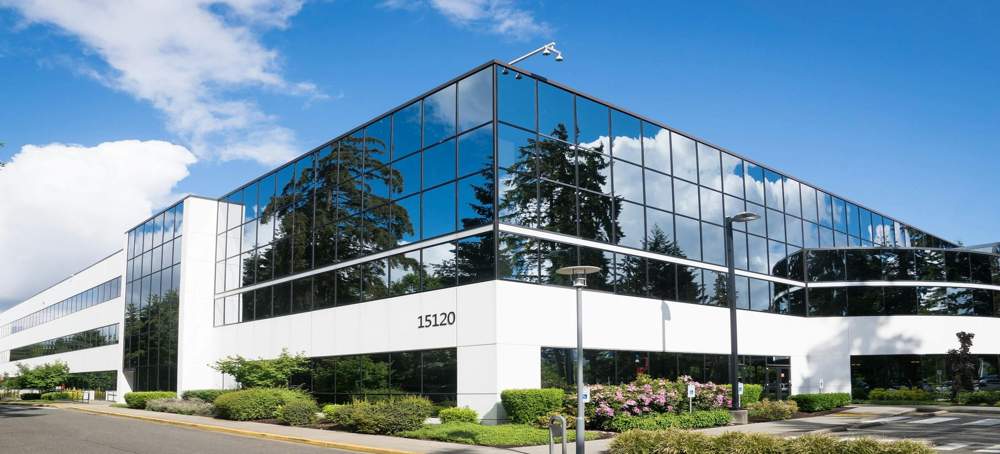

About Us, Colebrooke Hospital
On this page you can learn more about our history, mission, and the different branches that make up our healthcare network. We are dedicated to providing top-notch medical services through our two branches; Colebrooke Main Hospital and Colebrooke Kandy Hospital.
Colebrooke Main Hospital
Colebrooke Main Hospital is our flagship facility, located in the heart of the city. It has been serving the community for over 50 years, providing comprehensive healthcare services across various specialties. Our main hospital boasts state-of-the-art medical technology, modern infrastructure, and a team of highly skilled healthcare professionals. We are committed to delivering personalized and compassionate care to all our patients, ensuring their well-being and speedy recovery.
Colebrooke Kandy Hospital
Situated in the scenic city of Kandy, Colebrooke Kandy Hospital extends our reach to serve more patients with the same level of excellence. This branch offers a serene environment that promotes healing and recovery. Our Kandy facility is equipped with advanced medical equipment and staffed by experienced professionals who are dedicated to maintaining the high standards set by Colebrooke Hospital. We provide a wide range of services, including specialized treatments, emergency care, and preventive health programs to meet the diverse needs of our patients.
Hospitals Summary Table
| Branch | Location | Services Offered |
|---|---|---|
| Colebrooke Main Hospital | City Center | Services include, Emergency care, Inpatient/Outpatient surgery, Pediatrics |
| Colebrooke Kandy Hospital | Kandy | Services include, Specialized treatments, Preventive health programs |
| Both branches are committed to delivering high-quality, patient-centered care. | ||